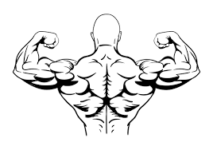
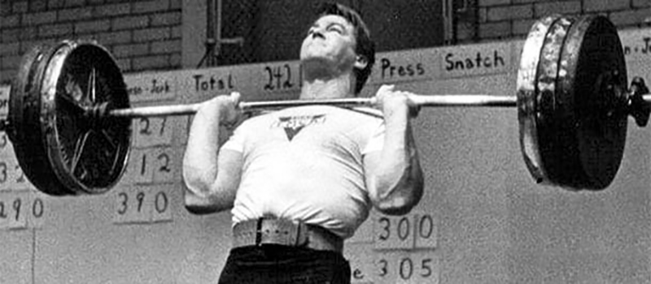

El Press militar imprescindible para los hombros y necesario para mucho más. En primer lugar desarrolla no solo los hombros sino que es un excelente ejercicio para la caja toráxica y los pulmones , es el clásico de la fuerza muscular , y además un movimiento fundamental en la halterofilia. El gran John Grimek , levantador Olímpico y Mister Universo , lo practicaba por estos dos beneficios :desarrollo y fuerza de hombros y tríceps y por el tema del aumento de la capacidad respiratoria . Este movimiento es necesario si eres aficionado al press de banca, y si eres hombre seguro que lo eres y si eres mujer y aun no lo practicas te estás perdiendo muchos beneficios. El press militar es un complemento perfecto al press de banca porque ayuda a que tus niveles de fuerza entre el pecho y el deltoide El agarre será con el pulgar rodeando la barra (no es recomendable el agarre suicida o agarre falso). Aunque no hay mucho riesgo de que la barra te caiga encima, es recomendable un agarre con el pulgar rodeando la barra. La barra la sujetarás lo más cerca posible de tu antebrazo, cerca de tu pulgar. De esa manera podrás hacer más fuerza para levantar la barra, por que tu antebrazo estará alineado con ella. Sujetarla con la parte más externa de la mano o incluso sobre tus dedos, provoca una hiper-extensión de la muñeca, debilitando tu agarra y a la larga lesionando tu antebrazo. La barra al sacarla de los soportes, tiene que descansar sobre tu clavícula. Tendrías incluso que poder soltarla de las manos sin que cayera. Quedando sujeta entre tus hombros y tus bíceps. Así evitarás cansarte antes de empezar. Los pies los tendrás un poco abiertos, a la altura de tus caderas o un poco más. La posición será cómoda pero estable. Los codos estarán cerca del cuerpo y por delante de la barra. Si no los tienes así, la barra irá hacia delante y no hacia arriba. No levantar la barra recta tiene varios problemas. El press militar o press de hombros no solo es un ejercicio que desarrolla tus deltoides y nada más. El press militar tiene una implicación directa también sobre tus trapecios, supraespinoso y los triceps. Por lo que trabaja de forma activa todo el hombro y la parte más alta de la espalda y los brazos.
Conclusiones: El press militar es esencial para desarrollar tus hombros y la parte alta de tu espalda. También es el complemento del press de banca equilibrando tu desarrollo y fuerza. Mejorar en el press militar te hará mejorar en el press de banca y te evitará lesiones. Para hacerlo correctamente tienes que hacer: Tus manos con la anchura de los hombros. No utilizar un agarre falso. Tus pies a la anchura de tus caderas. Tus codos siempre por delante de la barra. Descansar la barra sobre tus clavículas. Pecho arriba, hombros atrás y haz un bloqueo de tronco. Mirando a un punto fijo, levanta la barra recta sobre tu cabeza. Lleva el cuerpo adelante para meterlo bajo la barra, no la barra atrás. Bloquea los codos y deja alineados barra, cabeza, caderas y pies. Baja la barra y flexiona un poco las piernas para amortiguar la barra en cada repetición .
Direccion Horizontal:
calle 6 no 87-98c